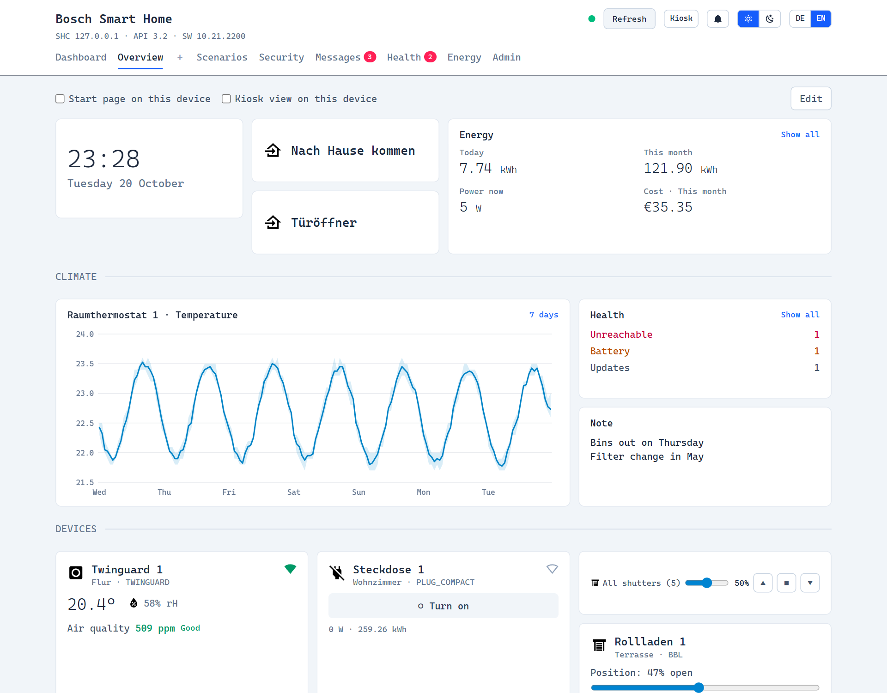
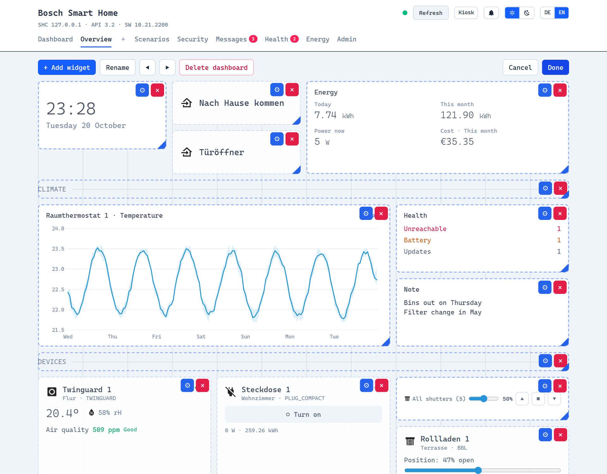
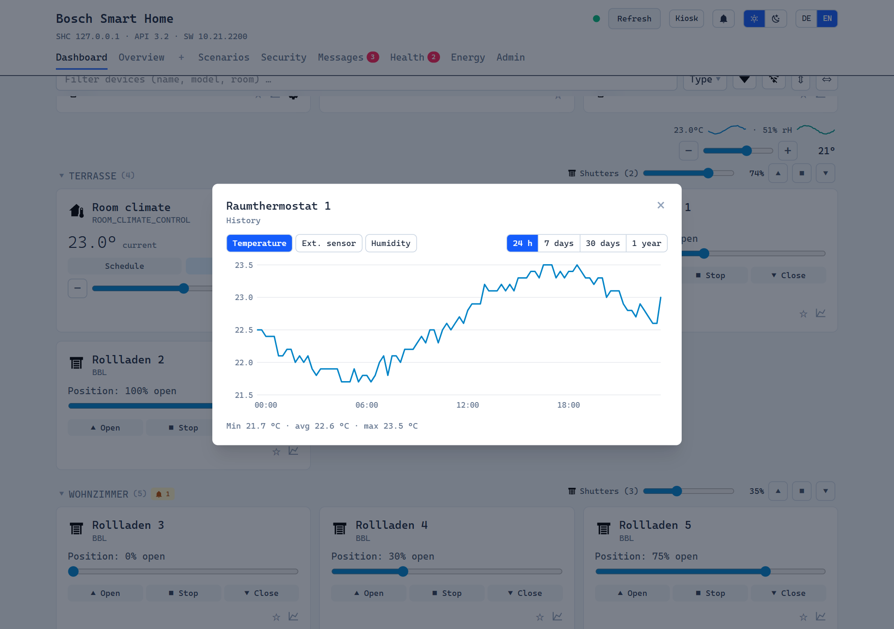
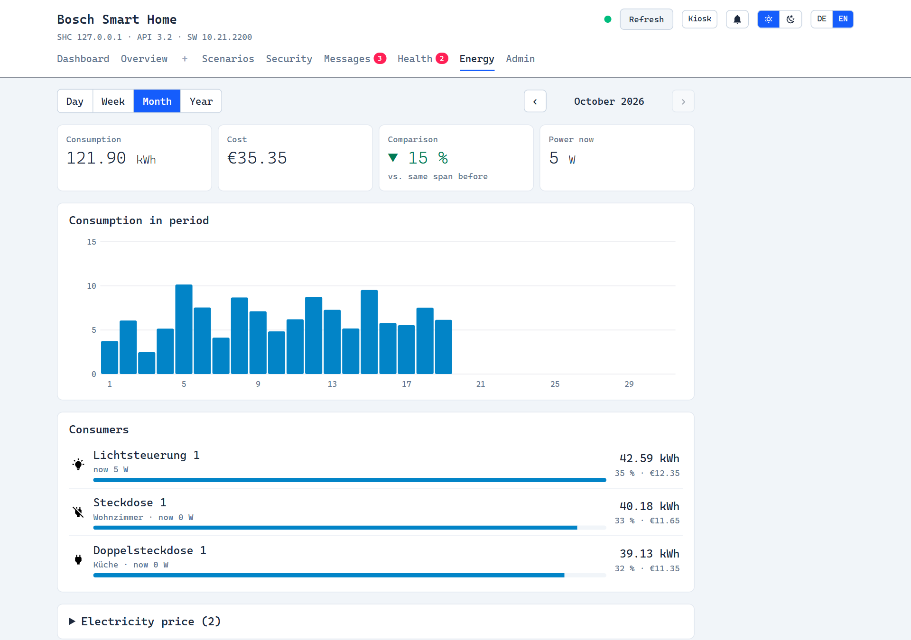
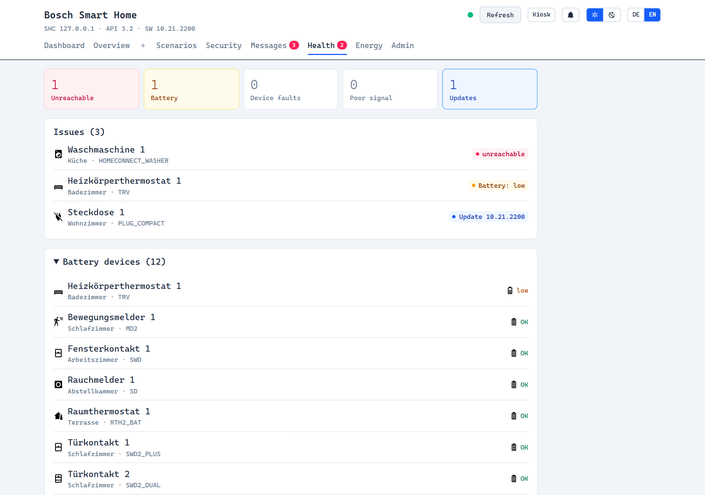
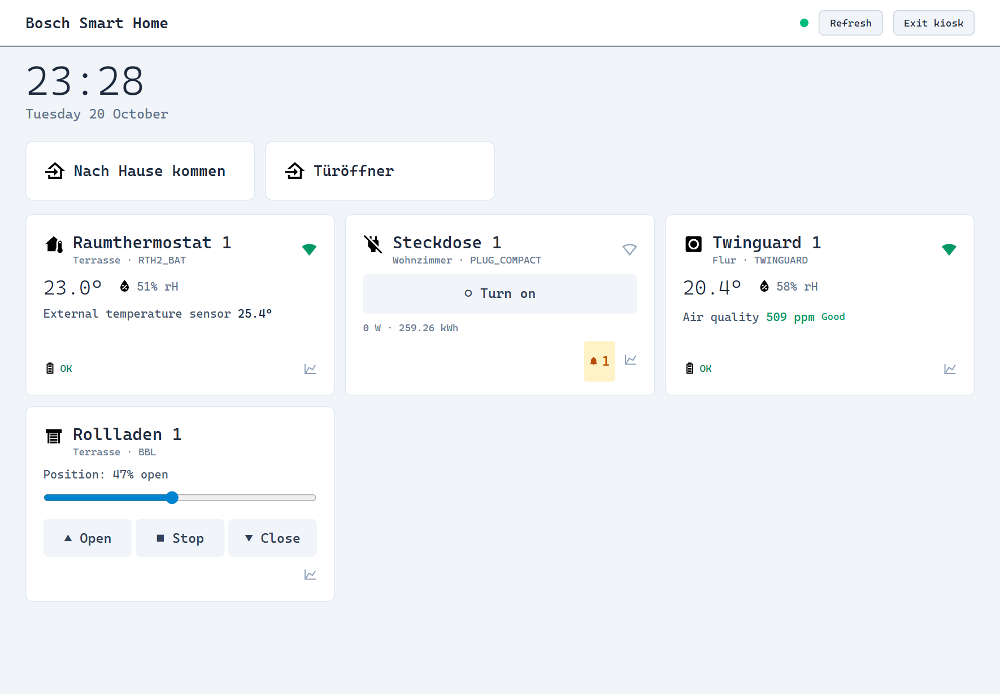

Features
Everything runs in your home network and talks to the controller over Bosch's official local API.
Dashboard
All devices by room: heating, shutters, lights, plugs, window contacts, smoke and motion detectors, Twinguard, cameras. Live updates.
Custom dashboards
Build your own pages from widgets – devices, rooms, charts, energy, scenario buttons, clock, notes – and arrange them by drag & drop.
History charts
Temperature, humidity, power, valve position, air quality and more, from 24 hours to a year. Includes values the Bosch app doesn't show.
Energy & cost
Consumption and cost per day, week, month and year, per device, with your own electricity price.
Device health
Unreachable devices, low batteries, weak signal and pending firmware updates at a glance.
Kiosk & favourites
A clean wall-tablet view with only the devices and scenarios you need – or one of your own dashboards.
Scenarios & alarm
Run scenarios, switch automations, arm and disarm the alarm system, read messages.
App & users
Install as an app (PWA), optional login with multiple users, light and dark theme, English and German.
Private
No cloud, no account, no tracking. Your data stays on your controller and your server.
Screenshots
Made with the built-in demo — no real home involved.






Installation
You need a Bosch Smart Home Controller (I or II), already set up in the Bosch app, and its system password.
Home Assistant add-on
Add-on store → ⋮ → Repositories → add the URL below → install Bosch SHC Web UI. Opens in the HA sidebar.
https://github.com/BenjenJones/bosch-shc-web-uiDocker
NAS, server, Raspberry Pi, Synology, Unraid, Portainer.
docker run -d --name bosch-shc-ui \
--restart unless-stopped -p 3000:3000 \
-v bosch-shc-data:/data \
ghcr.io/benjenjones/bosch-shc-web-ui:latestNode.js
Linux, Windows, macOS — Node.js 22.13 or newer.
git clone https://github.com/BenjenJones/bosch-shc-web-ui
cd bosch-shc-web-ui
npm ci && npm startThen open http://<ip>:3000. A short wizard pairs the UI with your controller. Step-by-step guides: INSTALL.md.
Just looking?
Try the demo with made-up devices and a year of history — no controller needed.
docker run --rm -p 3001:3001 ghcr.io/benjenjones/bosch-shc-web-ui node demo.jsThen open http://localhost:3001.
Auf Deutsch
Die Bosch SHC Web UI ist eine lokale Weboberfläche für den Bosch Smart Home Controller (SHC I und II). Du steuerst alle Geräte im Browser – Heizung, Rollläden, Licht, Steckdosen, Fensterkontakte, Rauchmelder, Twinguard und Kameras – siehst Verlaufsdiagramme für Temperatur und Luftfeuchtigkeit, Stromverbrauch und Stromkosten und behältst Batterien und Funkqualität im Blick. Eigene Dashboards stellst du dir per Drag & Drop aus Widgets zusammen.
Alles läuft in deinem Heimnetz, ohne Cloud. Installation als Home-Assistant-Add-on, Docker-Container oder mit Node.js. Die Oberfläche gibt es komplett auf Deutsch.
FAQ
Does it need the Bosch cloud or an account?
No. It talks directly to the controller in your network using Bosch's official local REST API.
Which controllers are supported?
Bosch Smart Home Controller I and II.
Does it replace Home Assistant's Bosch integration?
No, it is a separate dashboard. It runs fine next to Home Assistant, as an add-on in the HA sidebar, or completely without Home Assistant.
Is it free?
Yes, open source under the MIT license. Bosch permits the local API for private, non-commercial use.